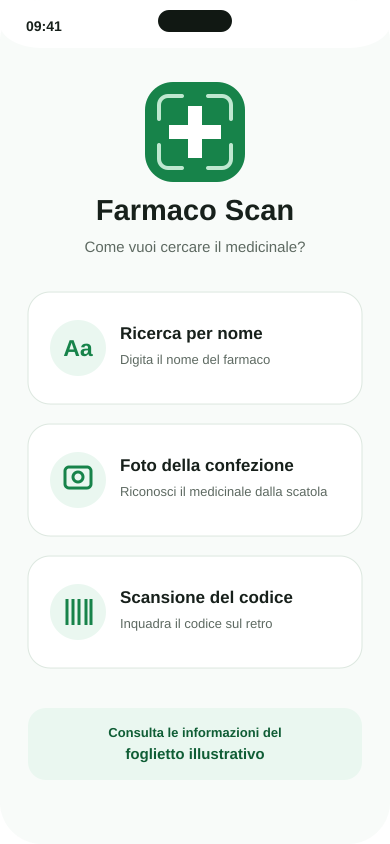
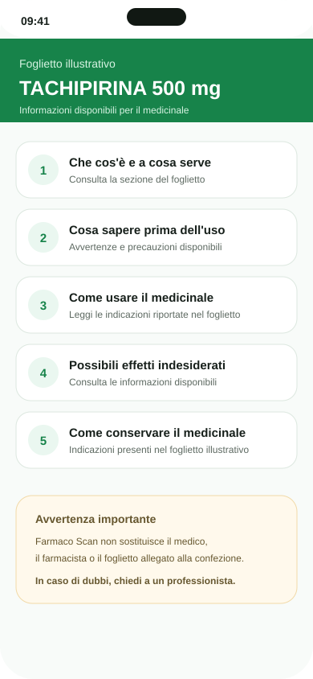
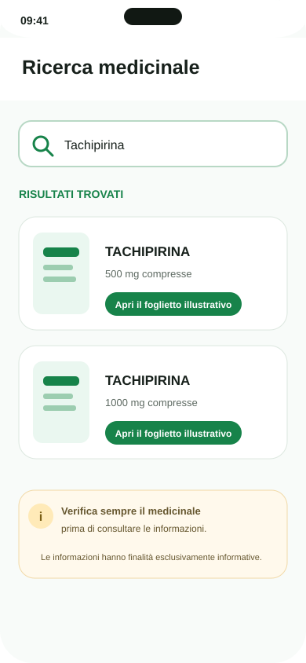

Ricerca per nome
Scrivi il nome del medicinale, seleziona il risultato corretto e consulta il relativo foglietto illustrativo.
Cerca un farmaco digitando il nome, fotografando la confezione oppure scansionando il codice presente sul retro. Farmaco Scan ti aiuta poi a consultare in modo semplice le informazioni disponibili nel relativo foglietto illustrativo.
Disponibile per Android e iPhone.

Il punto centrale dell'app è il foglietto illustrativo: dopo aver identificato il medicinale, puoi consultare le informazioni disponibili organizzate in modo più immediato.
In tutti e tre i casi l'obiettivo è lo stesso: individuare correttamente il farmaco e aprire le informazioni disponibili nel suo foglietto illustrativo.
Scrivi il nome del medicinale, seleziona il risultato corretto e consulta il relativo foglietto illustrativo.
Fotografa la parte frontale della scatola: l'app prova a riconoscere il nome e a trovare le informazioni del foglietto illustrativo.
Inquadra il codice presente sul retro della confezione per identificare il medicinale e accedere alle informazioni disponibili.
Una volta selezionato il medicinale, Farmaco Scan rende più immediata la consultazione delle informazioni disponibili nel foglietto illustrativo.
Che cos'è e a cosa serveLe indicazioni disponibili per il medicinale.
Avvertenze e precauzioniLe informazioni da conoscere prima dell'uso.
Uso ed effetti indesideratiLe sezioni previste dal foglietto illustrativo, quando disponibili.
Conservazione e contenutoUlteriori informazioni riportate nel foglietto.

Farmaco Scan riduce i passaggi necessari per trovare il medicinale e raggiungere le informazioni disponibili nel relativo foglietto illustrativo.
Usa il nome, una foto della confezione oppure il codice sul retro.
Controlla nome, dosaggio e forma farmaceutica prima di proseguire.
Consulta le informazioni disponibili, suddivise nelle relative sezioni.
Le schermate mostrano il percorso principale: scegli come cercare, identifica il farmaco e apri le informazioni disponibili.

Farmaco Scan ha finalità esclusivamente informative. Non sostituisce il foglietto illustrativo allegato alla confezione, né il parere del medico, del farmacista o di altri professionisti sanitari. Prima di assumere un medicinale, verifica sempre il prodotto selezionato e segui le indicazioni ricevute da un professionista.